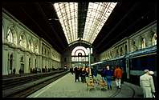
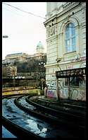
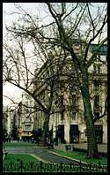
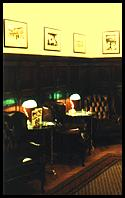
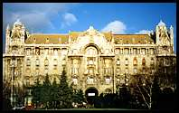
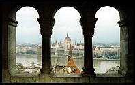
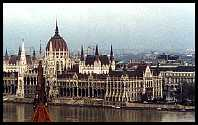

I thought I'd go to Budapest for the day today - I'll have six hours
when I get there, before I have to catch the train home. I've tried living in a strange country for several months - that's good - but I haven't ever visited one for the afternoon.
I haven't even got there yet, but I know that it's going to be
wonderful. I can't think of any other explanation for why people tell me that Budapest is quite touristy, despite the countryside looking as if it hasn't stopped raining at any point during the last two months. Still twenty minutes outside the city on the train, the landscape is very bleak, as well as wet. In March I would expect this kind of countryside to be more green, and maybe even have the odd farm animal munching something.
We must be nearly there now, because the train has just crossed the
Brown Danube, which is wider here than I had expected, inasmuch as I had expected anything at all. That's the thing about getting out of Vienna today - I have no idea what to expect at all. I really know nothing about Budapest. I'm only hoping that it will be less dull than Vienna is on Sundays, even if it isn't less wet.

We're here! Now that we're actually in the city, first impressions are
good: the inside of the railway station is impressive and beautiful. This is how I imagine buildings to be in Eastern Europe - very big. Now, after about ten seconds of walking down the street, I've noticed that the road surface is really bad, and therefore full of big puddles. The average splash distance is two or three metres, because the cars aren't hanging around. At least the pavements are wide, so we have a chance of keeping our distance - none of the puddles have got me yet.
This is a really grotty area of town - I hope it gets better than this.
It is very continental European-looking, with big old buildings and big wide roads, but very dirty and grey, with the cars, billboards and fast-food chains providing the only splashes of colour.
Among other things I'm totally ignorant of the currency. I don't even
know what it's called here, but having looked in in a couple of windows I know that you can get about 350 of them for one pound (sterling) and that a small pizza at Pizza Hut costs about one pound fifty. I guess this means that we won't need much cash when we finally find a cash point.

I had been slightly apprehensive about turning up with no money, but
someone employed by the tourist office or something was on the train to answer questions from stupid foreigners. Actually, he was probably English himself - he had that 'gap year' look about him. Apparently there are loads of Visa cash machines around. Even better is the free street map he gave us; Budapest is a big place and I'm glad that we now have some idea about which way to walk.
After quite a walk we've made it down to the river where the buildings
are smarter and bigger. The water is very high, flowing fast and mean-looking. From up close I can see that the Danube really is very wide here, which means that I can't see much of the Citadel on the opposite bank. There's a big statue of someone holding something, but I can't see what it is. I know lots of people who take their tourism far more seriously than this, and would know everything about it, including what the sculptor's last words were. Further along the bank is a mass of big and attractive buildings on the castle hill. We'll see that from further along the river later on.
Back a bit from the river, we are now on what looks like the main
pedestrian shopping street. It is not very remarkable, although the architecture is quite interesting. Mostly I just feel sorry for the girls who work in the lace and porcelain shops who are wearing traditional dress. It looks a bit silly to me, and presumably to them too, but it is pretty so I don't mind. I like to think that they know this and don't mind wearing it too much either.
 At the end of the shopping street is what might be the main square, or
at least one of them. The square is big and clean, and has a huge cafe-restaurant on the other side. It looks very posh, but I need a coffee enough for that not to seem very important at the moment. Inside it is very posh, but with the advantage that I can afford it. Inside I've found a side room to sit in that is like something straight out of an English gentleman's club (not that I'd know), with leather armchairs, oak panelling and green reading lamps. This is a strange enough experience, after most of the cafes I know, for me to know that I'm definitely on holiday.
At the end of the shopping street is what might be the main square, or
at least one of them. The square is big and clean, and has a huge cafe-restaurant on the other side. It looks very posh, but I need a coffee enough for that not to seem very important at the moment. Inside it is very posh, but with the advantage that I can afford it. Inside I've found a side room to sit in that is like something straight out of an English gentleman's club (not that I'd know), with leather armchairs, oak panelling and green reading lamps. This is a strange enough experience, after most of the cafes I know, for me to know that I'm definitely on holiday.
The coffee, with milk, is good and now I feel much better. Even better
are the salmon sandwiches with salad and dressing, especially since they only cost as much as the proverbial British Rail sandwich, but are exceedingly good.
Back to the river bank everything is much smarter, cleaner and in better
condition than what I saw earlier on. Taking in the big view and impressive buildings I can see that this must be much more pleasant in the summer: I can just imagine all of the brown and grey being transformed into bright green and blue.

Having trekked all the way across the river on one of the bridges we are
now walking up the hill to the castle. The houses are prettier here, but just as grotty as everywhere else, although the castle at the top is very clean. Once at the top everything is sufficiently picturesque to scream 'tourist trap' quite loudly, so I guess it's not all bad that were here at such an obscure time of year. As it is there are almost no tourists at all, just a few people who have wandered off down the street.
Up here the streets are suitably cobbled and charming, and much cleaner.
This is like a completely different world. I can also now see down into the valley in the opposite direction to the river, where there is much more city, spread right up the sides of the hills. Most capital cities that I have been to are much more flat than this.
Just behind the castle is the best find so far today - a cafe called
Miró, in the style of the painter. I really wasn't expecting to find a cafe worthy of the European Cafe Watch S-list today. I'm tempted to spend the whole rest of the afternoon here now, drinking tejeskávé - coffee with foamed milk. I don't have a book to read, but then I could always devote the afternoon to deciding which of the stunning waitresses is the most beautiful.
Now we're back down by the river the sun has come out and totally
transformed Budapest into a big and wonderful city, where the often-colourful buildings are much more beautiful. It is so much nicer to walk around now, but there is still hardly anyone about. That is probably still the most confusing thing about this place - where everybody goes on Sundays, because everything is closed and there is almost no-one about. It makes me wonder what Hungarians are like; I've never met one and am unlikely to today.

After five hours of walking around it is definitely time for a rest, so
we've popped into Anna Cafe for a drink and a bite to eat. This is a must less interesting cafe than the other two - much more of an everyday place, with standard everything, lots of people and no style. Intrigued, I have ordered a hot chocolate with rum in it, and a sandwich. The sandwich is pretty mediocre; in fact it is almost identical to what I'd expect in all of the cafes that look just like this anywhere else in Europe. It's much cheaper though.
Looking out of the window I can see that everyone is out for a
late-afternoon stroll. I don't know whether it's not raining for a change, or just the time of day, but it is starting to look more like a city. Even so, I'm still not particularly fond of the place.
On the way back up the road to the railway station it all looks so much
better without the rain, although the traffic is still fast, noisy and horrible. It's probably just that sort of big-city stuff that I'm not keen on - I don't particularly like London for the same reason. At least in Paris it's a bit easier to stay out of the way of the traffic.

We've made it to the station just in time to catch the 6 p.m. train. At
least we would be if there was one: despite what my timetable says, at
6 p.m. we only have the choice between going to Berlin Zoo Station or somewhere completely unpronounceable. So now we have an hour to kill, and feet that are killing us, in a railway station that doesn't have a cafeteria. That's bad enough, but there just doesn't seem to be anywhere to sit down either.
Such an extreme situation has sent us over the road to the nearest place
that looks like it might sell coffee: McDonalds. I didn't want to leave the station again, especially since it is now dark outside, and I definitely didn't fancy the idea of going to McDonalds, but I need a drink and somewhere to sit.
This McDonalds is only distinguished from those anywhere else by being
very cheap, rather than just cheap. Obviously it looks the same, but it even has the same people. Anyway, having decided not to risk the coffee after all, a half-litre of coke and an orange juice has set me back a whole ninety pence (about 1.5 Euros), so I still have some change left.

The couple next to us are clearly modelling themselves on Harry Enfield's
'The Slobs', although the kiddie is quite sweet. This is no more usual than it would be in London - most people dress quite well here, even if not expensively. The women in Budapest aren't necessarily more attractive in Budapest, but what certainly does make a nice change from London or Paris is to see attractive young women with long hair and no make-up, looking much better for it.
Despite Budapest's charms, I am now very glad to be on the train back to
Vienna, which is much smaller and less strange. Budapest is well worth a visit, but I have not felt particularly at ease here: everything in Budapest is so unfamiliar that I felt very out of place. I have only spent a couple of weeks in Vienna, so any feeling that I know what to expect there must be an illusion, created by a slightly more familiar language and culture. I expect that a Hungarian would find any large British city just as strange as I have found Budapest.
I would like to go back to Budapest and find out more about what it is like. I don't mean
that I would want to find out what all of the buildings are and visit museums and art galleries. That would only really teach me about Budapest's history, which in turn wouldn't tell me what I want to know about the city and its culture as they are today. What I would like to do is drink beer with people who live there, make friends, have my own flat and generally experience the city first-hand, as I did during my months in Paris and Luxembourg. I guess seven-hours isn't enough to see a town - I'd better make it a few months next time.
{kind=link}
{kind=link}
{kind=link}
 At the end of the shopping street is what might be the main square, or
at least one of them. The square is big and clean, and has a huge cafe-restaurant on the other side. It looks very posh, but I need a coffee enough for that not to seem very important at the moment. Inside it is very posh, but with the advantage that I can afford it. Inside I've found a side room to sit in that is like something straight out of an English gentleman's club (not that I'd know), with leather armchairs, oak panelling and green reading lamps. This is a strange enough experience, after most of the cafes I know, for me to know that I'm definitely on holiday.
At the end of the shopping street is what might be the main square, or
at least one of them. The square is big and clean, and has a huge cafe-restaurant on the other side. It looks very posh, but I need a coffee enough for that not to seem very important at the moment. Inside it is very posh, but with the advantage that I can afford it. Inside I've found a side room to sit in that is like something straight out of an English gentleman's club (not that I'd know), with leather armchairs, oak panelling and green reading lamps. This is a strange enough experience, after most of the cafes I know, for me to know that I'm definitely on holiday.{kind=link}
{kind=link}
{kind=link}
Reader comments
Come back in winter or late spring and sample the night-life!
Contributed by Orosz Marcell on 21 October 2000.
I totally disagree...
Contributed by Mirella Webb on July 15, 1999.
... and you're right!
Contributed by Peter Hilton on July 21, 1999.